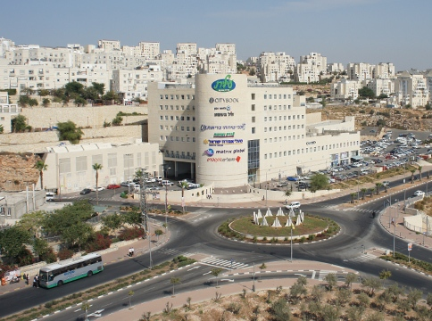
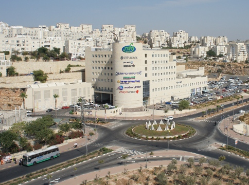
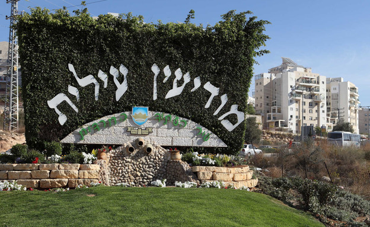
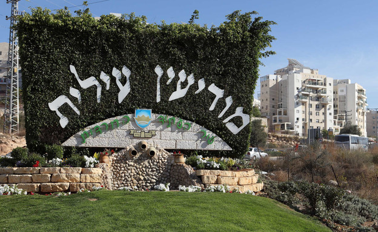
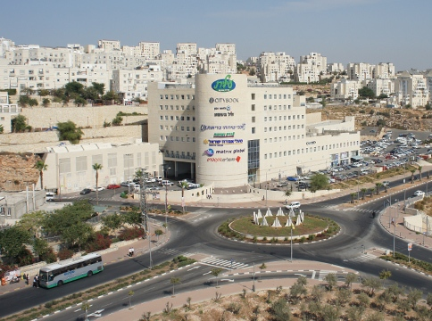
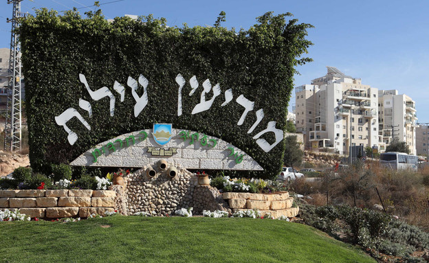

.jpg) 

“מודיעין עילית” מונה כ- 80,000 תושבים בכ-12,000 בתי אב, מאופיינת כעיר צעירה עם שיעור גידול חסר תקדים, הודות לריבוי טבעי מבורך ולתנופת פיתוח מואצת. יתרונותיה של מודיעין עילית הובילו אותה להיות אחת הערים המרכזיות בארץ, עם אוכלוסייה עתידית של 120,000 תושבים. למרות נתוני פתיחה מאתגרים במיוחד: עיר שנבנתה על קרקעות פרטיות ללא ליווי ממשלתי, ללא תכניות אב, וללא סיוע של מינהל מקרקעי ישראל, עם מציאות שהביאה להיעדר הכנסות הנובע מחוסר בהיטל השבחה וחילף היטל השבחה, ובין השאר ממצב סוציו-אקונומי במדרג 1 הנמוך ביותר, למרות כל זאת הפכה מודיעין עילית למודל חיקוי, סמל ודוגמא לעיר מתפתחת ומצליחה. מודיעין עילית זוכה מדי שנה בפרס ניהול תקין על-ידי שר הפנים, חרף הנתונים שפורטו, בהיותה העיר היחידה במדינת ישראל עם מדרג כלכלי חברתי אשכול 1 שהגיעה אי-פעם להישג כזה. כן זכתה העירייה בתחרות כוכבי היופי מטעם “המועצה לארץ ישראל יפה” ובפרסים בתחום איכות הסביבה. העיר משמשת תבנית מופת לצורה בה מתנהלת עיר חרדית. תושבי המקום חשים בכך יום יום, כשהם מתגוררים בעיר המשגשגת בכל התחומים: חינוך, חיי תורה לצד איכות חיים, תעסוקה, רווחה, חיי קהילה תוססים ועוד. לשילוב המנצח הזה ישנן סיבות ושותפים רבים בבניינה, ביסוסה ופיתוחה של העיר, ביניהם משרדי הממשלה, היזמים, החברות והמשקיעים הרבים. מודיעין עילית חרטה על דגלה "תורה וגדולה במקום אחד". עיר תורנית מובהקת, ממלכה של חינוך, לצד איכות חיים ועשייה בהיקף ובעוצמה המהווים מודל לחיקוי.`

